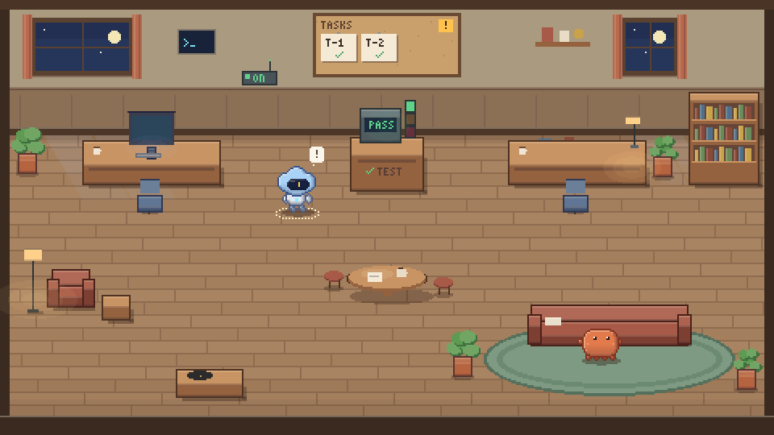

Orca Studio데모 계획 · 보호 경로 변경
DEMO · 모의 데이터 — 실제 CLI·실행·기록 없음
Runtime 연결됨 · Orca 1.4.264 검증 버전
바인딩 있음
Run run_0123456789ab
Worker 전송 차단

Claude 펫 · 마스코트 · 휴식 중
×2 · 480×270
Task Board 2검증 기록 기준
✓
T-1 작업 계약 검증
unit-tests passed · 요구사항 FR-01
완료 1/1
✓
T-2 요구사항 추적 표시
screen-tests passed · 요구사항 FR-07
완료 1/1
Review Queue 2
!
보호 경로 변경
T-1 보호 경로 변경 · 승인 보류
review
!
연결 없는 변경
연결된 작업이 없는 변경 2개 확인
review
snapshot@1 · demo · connected-protected.jsonRuntime 출처 demo · 작업 출처 demo
움직임: 보통확대 ×2로컬 실행·다른 세션 진행은 이 문서에 없음